Abstract
Reasoning-augmented image editing operates under a prevailing assumption: more deliberation yields better edits. We show this assumption is fundamentally flawed. Through a diagnostic study of BAGEL, a state-of-the-art unified multimodal model, we identify three root pathologies of SFT-based reasoning: complexity-agnostic outputs that apply identical deliberation depth to trivial and complex edits alike; adherence dependency, where correct reasoning fails to translate into generation gains without sufficient adherence capacity in the generation expert; and verbosity without substance, where tripling the reasoning budget yields no quality improvement (GPT-Score ≈ 5.2), while structural directives at the same budget deliver a substantial gain to 6.1. These findings converge on a single conclusion: neither adaptive reasoning length nor structured templates alone resolves overthinking, both are jointly necessary. We introduce PRISM (Planning with Reasoning via Instructed Structured Modes), a compound adaptive-and-structured reasoning framework that decomposes pre-generation deliberation into three sequential stages, complexity steering, tailored lens generation, and ordered lens execution, distilled into unambiguous per-sample actions that drive a flow-matching generation expert. The understanding and generation experts are trained jointly via GRPO and Flow-GRPO with variance-guided early-window selection, without any external verifier or multi-turn inference. To power the framework, we introduce REVISE-50K, a dataset of 50,000 samples spanning 50 editing skills with graded complexity labels and disentangled hardness and verbosity axes. PRISM establishes a new state of the art on three reasoning-intensive benchmarks, improving over BAGEL-Think by +13.0 points on KRIS, +3.4 on RISE and +17.8 on PICA, while preserving performance on direct editing tasks and surpassing multi-round external verifier systems at 20× lower inference cost.
PRISM in Action
Each example follows one instruction through PRISM's four stages, from the predicted complexity to the edit. The budget changes with the instruction: one lens for a direct recolor, two for a crack with physical side effects, three for an impact whose outcome has to be predicted. The first two examples are the ones in the figure above and the third is from PICABench; as in the paper's figure, the text is abridged (…). Click a stage to jump to it.
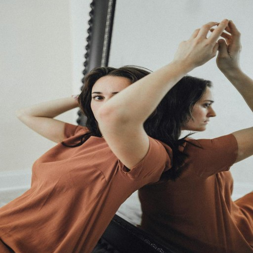
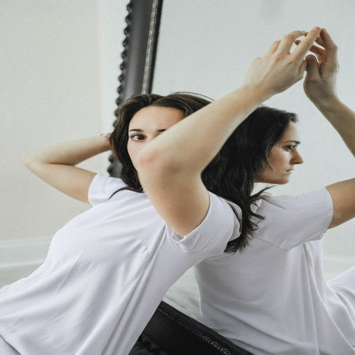
Reflection: Relight the white clothing so its shadows, highlights, and reflections are consistent with the mirror, …
Color Replacement: Change the person's t-shirt to bright white while maintaining fabric texture…
Texture Consistency: Ensure the white clothing matches the original fabric, including wrinkles, …
Shading and Reflections: Update shadows, highlights, reflections on the white clothing to align …
Plausibility: A realistic crack appears on the milk bottle, … branching naturally; liquid spills slightly, … with light refraction visible.
Visual Coherence: The crack … aligns naturally with the bottle's curvature; …, matching the lighting and texture of the wood surface.
Crack Realism: Introduce a realistic crack starting …, branching naturally along the curvature, …
Visual Continuity: Position the crack … reflects lighting and texture, and integrate shadows …
Spill Physics: Slightly spill milk from the crack, forming a realistic pool on the wood …
Causality: The hammer's motion causes a direct impact on the egg, creating a visible crack with shell fragments …; egg yolk spills slightly.
Plausibility: The egg cracks realistically with a jagged fracture; yolk and white spill naturally; …
Dynamic Realism: The hammer's head makes contact with the egg, … shadowing and lighting match motion direction and physical impact; …
Hammer Impact: Position the hammer head to make contact with the egg, creating a realistic crack with jagged shell fragments; …
Physical Consequence: Simulate the hammer striking the egg, resulting in a realistic crack; show egg white spilling outward, …
Realism Preservation: Capture hammer contact with egg, including crack detail, spilled egg contents, and shadow; …
Motivation
Chain-of-thought prompting and large-scale reinforcement learning have made slow, deliberate thinking a first-class component of vision-language models, and unified multimodal models such as BAGEL have carried it to image editing, where emitting a reasoning trace before generating improves instruction following. The prevailing assumption is clear: the more the model deliberates, the better the edit.
Reasoning should be adaptive and structured, not uniform.
We find that reasoning can actively hurt editing quality. On a direct instruction, deliberating over an obvious edit wastes capacity and introduces noise; on a reasoning-intensive one, the same mechanism is indispensable. A model therefore has to decide, per edit, whether to reason, about what, and how deeply.
More deliberation, better edits
Reasoning-augmented editors emit the same kind of chain-of-thought before every edit, whether the instruction is a recolor or a physical chain reaction.
Reasoning hurts direct edits
Turning on BAGEL's thinking mode lowers GEdit from 5.35 to 5.06 on direct, self-contained instructions, while it raises KRIS from 56.21 to 60.18 on reasoning-intensive ones.
How much to think, and how?
Can one model decide per edit how deeply to reason, and structure that reasoning so that it turns into a better edit rather than a longer one?
Diagnosing Overthinking
A diagnostic study of BAGEL's SFT-based reasoning on a reasoning-intensive benchmark (KRIS) and a direct editing benchmark (GEdit) identifies three distinct pathologies.
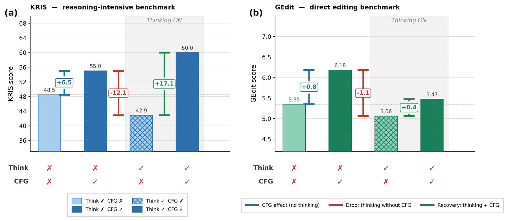
Reasoning backfires on direct edits
5.35 → 5.06 GEdit, thinking onThinking improves KRIS (56.21 → 60.18) but hurts GEdit. The culprit is not reasoning itself but complexity-agnostic reasoning: BAGEL generates the same elaborate chain-of-thought for a trivial color change as for a complex multi-object manipulation.
Reasoning is gated by adherence
55.0 → 42.9 KRIS, thinking without CFGEven semantically correct reasoning degrades the edit when the generation expert cannot follow it, and only with CFG does thinking recover to 60.0. A model that cannot execute its own plan cannot benefit from planning, so PRISM also trains the generation expert.
Verbosity is not reasoning
≈ 5.2 GPT-Score at any lengthLoRA variants trained to reason at three fixed budgets score the same despite a 3× length difference. A structural directive at the Heavy budget, resolving ambiguities before reasoning, lifts quality to 6.10 at a similar length.
Reasoning quality on KRIS, judged by GPT-5.2, for reasoning budgets of 10–15 (Light), 20–30 (Moderate) and 40–60 (Heavy) words. Structure, not length, drives quality.
| Variant | Avg. words | GPT-Score |
|---|---|---|
| Light | 21 | 5.24 |
| Moderate | 33 | 5.12 |
| Heavy | 59 | 5.26 |
| Heavy + structure | 66 | 6.10 |
Adaptivity alone is not enough. Adaptive length without structure degenerates into verbosity (Observation 3).
Structure alone is not enough. Rigid structure without adaptivity fails to discriminate task complexity (Observation 1). The two are orthogonal but jointly necessary.
Method
PRISM (Planning with Reasoning via Instructed Structured Modes) is built on BAGEL, a decoder-only unified model (7B active, 14B total parameters) whose separate understanding and generation experts share self-attention at every layer. Its design principle is structure-aware yet adaptive generation: scaffolding that guides reasoning without fixing it to a rigid template. Given an input image \(I\) and instruction \(x\), PRISM calls the unified model \(\mathcal{M}\) through four stages, and the actions of the last stage drive the flow-matching generation expert.
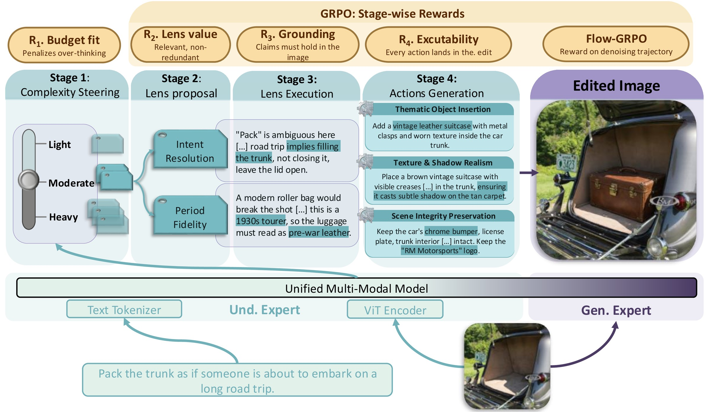
Complexity steering
Predict light, moderate or heavy from the input, which sets how many lenses to run.
Tailored lenses
Propose the perspectives this edit must be examined from, free to go beyond a seed vocabulary.
Ordered execution
Run the lenses in order, each conditioned on the traces before it, so later lenses refine rather than repeat.
Tailored actions
Distill the traces into three titled, unambiguous actions that the generation expert executes in one pass.
Adaptive complexity steering
Before reasoning, the model predicts a discrete complexity level directly from the input:
A deterministic budget function maps \(\hat{c}\) to the number of lenses, with three actions at every level, routing simple instructions to single-lens paths and complex ones to deeper multi-lens chains.
Tailored lenses, executed in order
A lens is a reasoning perspective the edit must be examined from. The prompt is seeded with an initial vocabulary \(\mathcal{L}\) of nine lenses, each derived from a failure mode of the BAGEL baseline:
The vocabulary only guides the model. It generates \(l\) tailored lenses for each input, each a free-form name and purpose, and is free to name its own; across the evaluation benchmarks, 86% of the generated lenses are not in \(\mathcal{L}\). The lenses are then executed in order, each conditioned on all preceding traces:
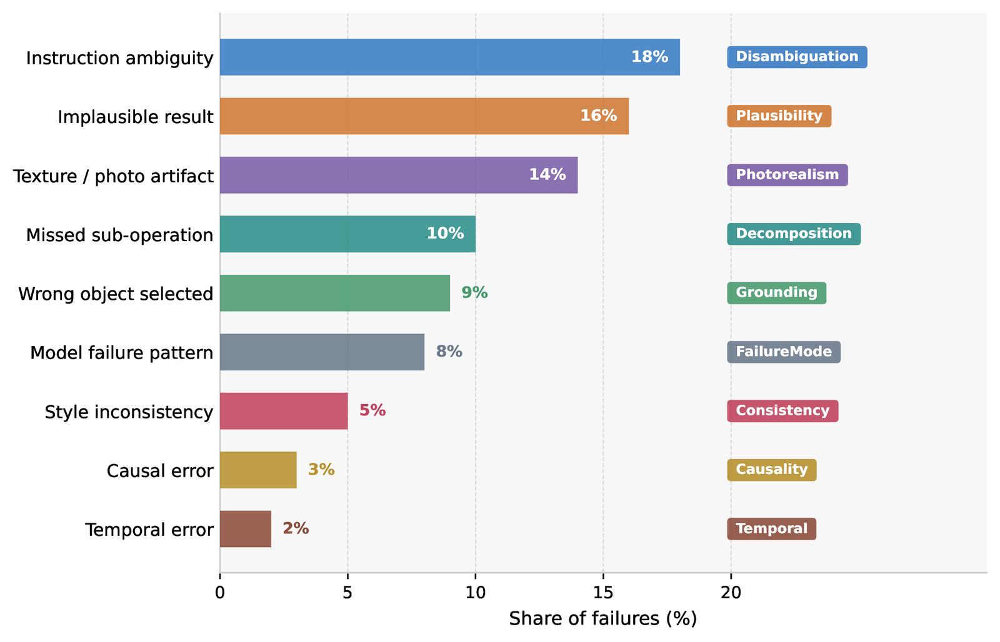
Tailored actions, one generation pass
The reasoning traces are distilled into \(n\) tailored, executable actions in a single forward pass:
- Tailored titles. Each action pairs an aspect title \(t_j\)
that the model names itself, such as
Subject Placement, with an unambiguous directive \(d_j\). Compared with fixed roles such as high-level edit and identity preservation, this is the most learnable action format. - One shot. The generation expert executes all \(n\) actions together to produce the edited image \(\hat{I}\), with no multi-turn inference and no external verifier.
Training and rewards
GRPO amplifies what the base model already does, but BAGEL predicts edit complexity poorly. Stage 1 is therefore warm-started with SFT on offline complexity labels from InternVL3.5-241B-A28B, and then all four stages are trained with GRPO, each with its own reward. The generation expert is trained with Flow-GRPO.
R2 to R4 are scored by InternVL3.5-241B-A28B with stage-specific rubric prompts. For the image, scoring a vague instruction against the edit yields an unreliable signal, so EditReward, an open-weight reward model trained on human edit preferences, scores the edit against each explicit action and the scores are averaged:
All reward models are open-weight, so training relies on no proprietary system.
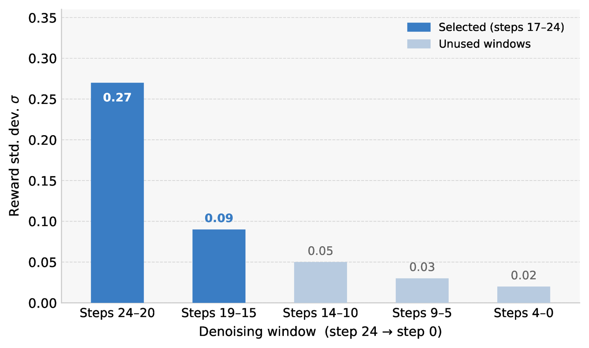
Variance-guided early-window selection
Flow-GRPO converts the deterministic sampling ODE into an SDE to get diverse samples for group-relative advantages. Reward variance is concentrated in the early, high-noise steps, where global structure is decided, and is an order of magnitude smaller at the end. PRISM injects noise only in steps 24–17 and keeps the rest deterministic, which converges faster and higher than full-trajectory Flow-GRPO or the sliding window of MixGRPO.
Training uses LoRA (rank 128) for one epoch with learning rate 1×10−5, one sample per GPU and a group size of 8, on 4 nodes of 8 A100 GPUs, at 512×512 with 25 denoising steps.
REVISE-50K
Existing editing datasets cover narrow task families, give no signal about how much reasoning an edit needs, and treat all instructions as equally demanding: the conditions that produce overthinking. REVISE-50K is built for GRPO training of reasoning-adaptive editing models.
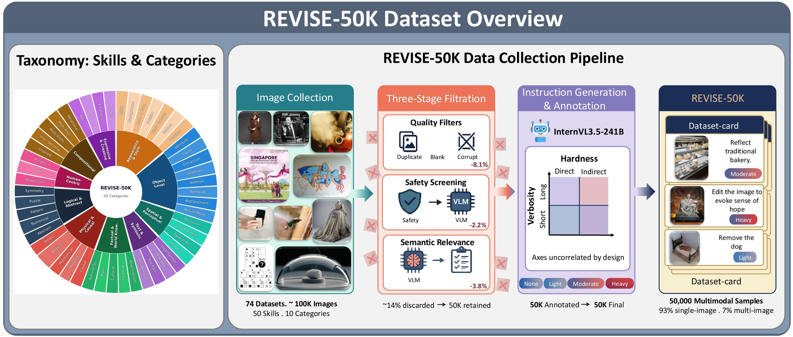
50 skills from 74 sources
Natural photographs (e.g. COCO, FFHQ), domain collections (e.g. WikiArt, DeepFashion) and procedurally generated stimuli such as dice nets, matchstick puzzles and mazes.
Hardness and verbosity are independent
The model cannot use instruction length as a proxy for difficulty. Instructions that ship with a source dataset are discarded and regenerated, for a consistent style and difficulty.
A complexity label on every sample
Each sample carries a complexity label and a reasoning trace, which drive the complexity reward during GRPO training.
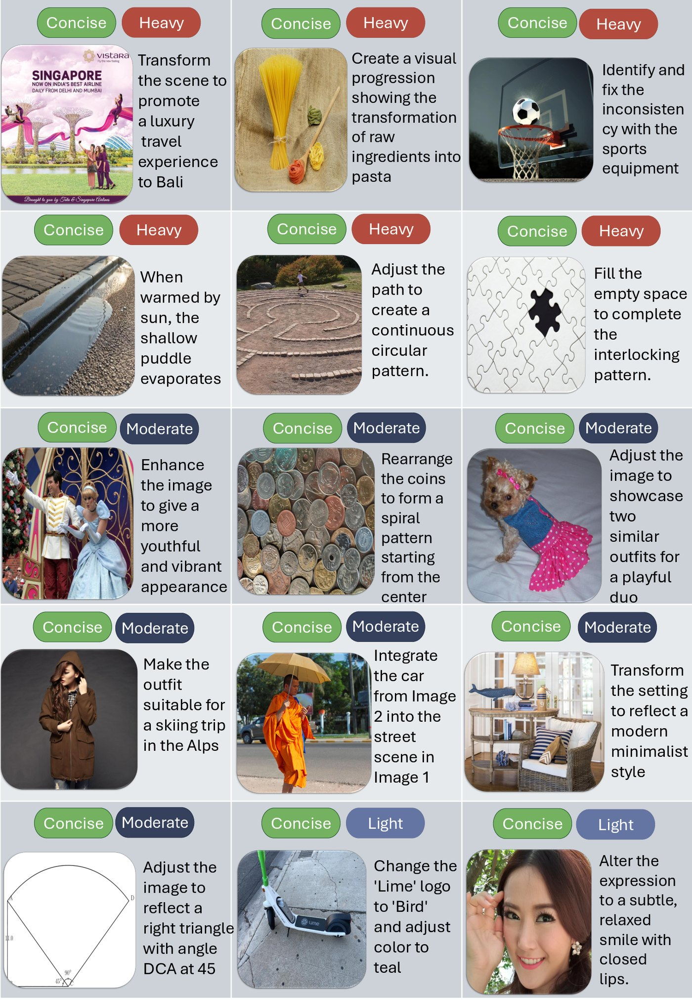
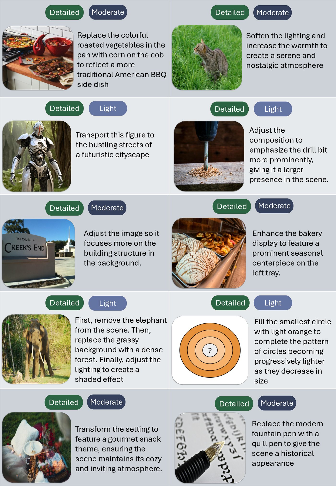
Results
Comparison with the state of the art
We evaluate on reasoning-intensive benchmarks (KRIS, RISE, PICABench), which require multi-step or physical reasoning, and on standard editing benchmarks (GEdit, ImgEdit) with direct, unambiguous instructions. The second group tests whether a reasoning model avoids overthinking simple edits. The fairest comparison is against our own backbone, BAGEL, which isolates the contribution of the framework.
Comparison with state-of-the-art editing methods. Green numbers are gains over BAGEL-Think; bold marks the best value in each column. * GEdit under our robust evaluation protocol (see the paper's appendix).
| Method | Non-reasoning | Reasoning-intensive | |||
|---|---|---|---|---|---|
| GEdit* | ImgEdit | KRIS | RISE | PICABench-Superficial | |
| OmniGen2 | 5.58 | 3.41 | 50.52 | 3.1 | 46.79 |
| FLUX.1 Kontext | 5.64 | 3.44 | 61.81 | 5.8 | 48.93 |
| Qwen-Image-Edit | 7.23 | 4.36 | 64.43 | 8.9 | 61.26 |
| ReasonEdit | 6.86 | 4.36 | 61.57 | 3.1 | 48.23 |
| ChronoEdit | 7.12 | 4.42 | 70.96 | 1.5 | 58.67 |
| BAGEL | 5.35 | 3.2 | 56.21 | 6.1 | 45.07 |
| BAGEL-Think | 5.06 | 3.0 | 60.18 | 11.9 | 46.48 |
| PRISM (ours) | 7.00+1.9 | 4.00+1.0 | 73.2+13.0 | 15.27+3.4 | 64.32+17.8 |
State of the art on all three reasoning benchmarks. PRISM reaches 73.2 on KRIS, 15.27 on RISE and 64.32 on PICABench, ahead of systems that use larger models, higher resolutions and more training data, such as Qwen-Image-Edit. It also surpasses EditThinker, which runs an external 8B verifier for up to 8 rounds, in a single pass at 20× lower inference cost.
No overthinking penalty on direct edits. BAGEL-Think scores below BAGEL on GEdit (5.06 vs 5.35) and ImgEdit (3.0 vs 3.2). By routing simple instructions to low-depth reasoning paths, PRISM raises them to 7.00 and 4.00 instead.
Each subset needs its own lens
On three aspect-stratified evaluation subsets, lenses are added one at a time. Performance improves as lenses are introduced, and each subset gains most when the lens targeting its focal aspect is added, for example the Disambiguation lens on the disambiguation subset and the Grounding lens on grounding. Beyond that, further lenses give diminishing returns or slightly hurt, because irrelevant reasoning adds noise to the actions. Since the useful lenses differ per instruction, the model has to choose them per sample; letting it do so gives the best overall score.
Lens specificity. Each row adds one lens: Dis Disambiguation, Gnd Grounding, Pla Plausibility, Act Action. The last row lets PRISM choose its lenses per sample.
| Lenses | Disambiguation (KRIS) | Grounding | Plausibility | ||
|---|---|---|---|---|---|
| Rule-based reasoning | Part completion | Overall | |||
| Act (zero-shot) | 5.80 | 6.10 | 6.40 | 5.70 | 5.31 |
| Act | 7.25 | 7.50 | 7.99 | 6.40 | 7.10 |
| DisAct | 7.80 | 8.60 | 8.43 | 6.50 | 6.50 |
| DisGndAct | 7.67 | 8.60 | 8.38 | 6.90 | 7.00 |
| DisGndPlaAct | 7.73 | 9.02 | 8.61 | 6.50 | 7.50 |
| Adaptive lenses (PRISM) | 8.12 | 8.92 | 8.72 | 6.73 | 7.82 |
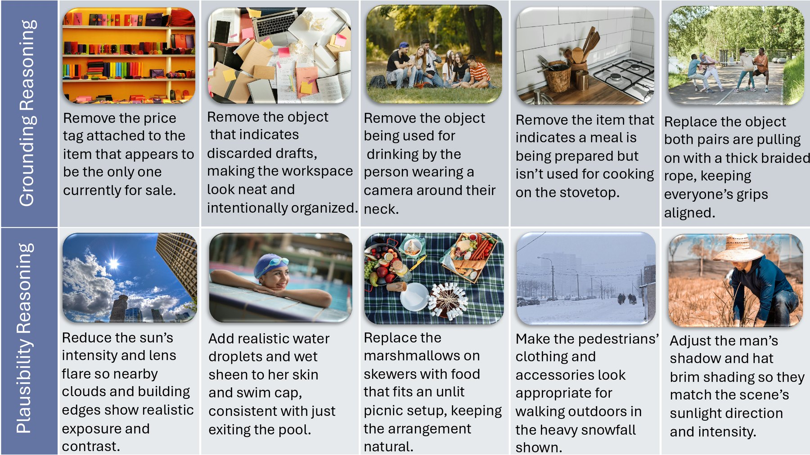
Where the gain comes from
Starting from BAGEL, we add one component at a time under identical training settings. Rows two and three train on OmniEdit; the last row replaces it with REVISE-50K.
KRIS · reasoning-intensive
GEdit · direct editing
- Flow-GRPO on the generation expert gives the largest jump on direct editing (GEdit 5.35 → 6.94) but only a moderate one on KRIS, addressing the adherence bottleneck of Observation 2.
- Adaptive and structured reasoning, still trained on OmniEdit, lifts KRIS by a further 6.7 points while keeping GEdit stable.
- REVISE-50K in place of OmniEdit adds another 6.4 on KRIS, with GEdit unchanged within judge noise, so the dataset is a distinct driver rather than a proxy for the method.
Structure, not GRPO, drives the reasoning gain
To separate the structured pipeline from GRPO itself, a free-form chain-of-thought is trained with the same GRPO setup, budget and data. It barely improves KRIS over no reasoning and lowers GEdit. Structure lifts KRIS to 73.4 under identical training, but applied uniformly it still overthinks direct edits; adaptivity recovers GEdit to 7.00 while keeping KRIS at 73.2, the only configuration that is strong on both.
All reasoning variants use the same GRPO setup, budget and data.
| Reasoning | Adaptive | Structured | GEdit | KRIS |
|---|---|---|---|---|
| None (Flow-GRPO only) | – | – | 6.94 | 60.1 |
| Free-form CoT | ✗ | ✗ | 6.25 | 62.8 |
| Structured, always Heavy | ✗ | ✓ | 6.37 | 73.4 |
| PRISM | ✓ | ✓ | 7.00 | 73.2 |
Complexity steering and action quality
Complexity is ordinal, so agreement is measured with quadratic-weighted Cohen's κ (QWK). Three annotators each rated the same 1,000 samples (200 per benchmark) on a 1–10 scale, with hidden repeats to measure test-retest consistency.
A low ceiling
0.777 QWK test-retest, vs 0.458 between annotatorsAnnotators agree with themselves (test-retest) far more than with each other, so the median of three is used as the consensus label.
InternVL3.5-241B beats GPT-5
0.608 QWK with the human consensus, vs 0.521 for GPT-5Against the consensus, InternVL3.5-241B prompted for a score agrees better than GPT-5 (paired bootstrap \(p{<}0.001\)), reaching 78% of the human test-retest ceiling.
SFT warm-start matters
0.605 QWK with the teacher, vs 0.569 for GRPO onlyAgainst the teacher on all five benchmarks (\(n{=}3{,}870\)), an SFT-trained Stage 1 beats GRPO-only training, and later GRPO of the other stages does not erode it.
Actions are rarely redundant or contradictory. Using GPT-5.2 to flag problematic action sets across all five benchmarks, only 7% of samples contain a redundant action and 4% a contradictory one. Redundancy arises mostly on direct benchmarks such as GEdit, when a light sample receives a separate “keep unchanged” action; contradictions concentrate on PICABench, where the model misses a physical consequence, and coincide with genuinely hard physical edits.
Qualitative Results
On edits with physical or visual consequences, the tailored actions spell out what BAGEL-Think leaves implicit: what is hidden behind a removed object, how mud displaces around a foot, how a pillow rests once it is released. Click any figure to enlarge it.
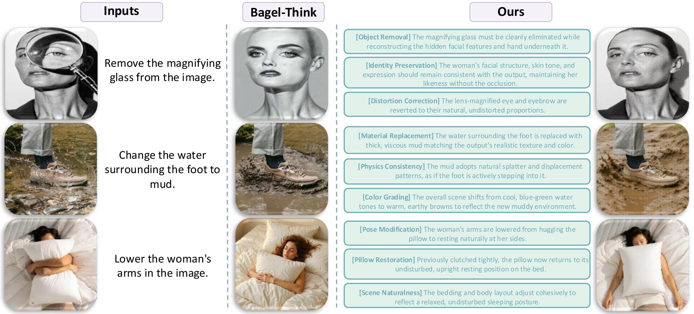
BibTeX
@article{prism2026dontoverthink,
title = {Don't Overthink: When Reasoning Backfires in
Image Editing and How to Fix It},
author = {Anonymous Authors},
journal = {arXiv preprint},
year = {2026}
}